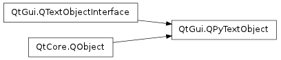

QPyTextObject ¶

Detailed Description ¶
Workaround to make possible use PySide.QtGui.QTextObjectInterface on PySide . Due to the technical details of how to bind C++ classes to Python, you need to use this class when you need to implement your own PySide.QtGui.QTextObjectInterface rather than create a class inheriting from PySide.QtCore.QObject and PySide.QtGui.QTextObjectInterface .
See also
- class PySide.QtGui. QPyTextObject ( [ parent=None ] ) ¶
-
Parameters: parent – PySide.QtCore.QObject